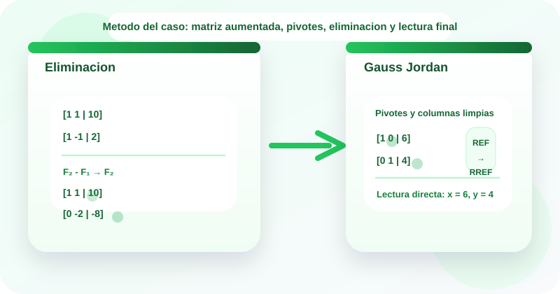

Casos guiados
Estudio de casos
Metodo de Gauss y Gauss Jordan
🧮 Los metodos de Gauss y Gauss Jordan permiten resolver sistemas lineales mediante operaciones elementales por filas sobre una matriz aumentada, transformando el problema en una forma mas simple y facil de interpretar.
En algebra aplicada y tecnologia se usan para analizar distribucion de recursos, mezcla de cargas de trabajo, equilibrio entre restricciones y deteccion de inconsistencias en datos. Este OVA se enfoca en construir la matriz aumentada, elegir pivotes, aplicar operaciones por filas y leer la solucion o el tipo de sistema.
El recurso usa la metodologia de estudio de casos para pasar del contexto verbal a la matriz aumentada, ejecutar la eliminacion y justificar la solucion obtenida.

Objetivos de aprendizaje
- 🧠 Reconocer cuando un sistema lineal conviene resolverse mediante eliminacion matricial.
- 📋 Construir matrices aumentadas a partir de sistemas de ecuaciones lineales.
- ↕️ Aplicar operaciones elementales por filas para llevar la matriz a forma escalonada o reducida.
- 🔎 Distinguir entre la eliminacion de Gauss y la reduccion completa de Gauss Jordan.
- ✅ Interpretar pivotes, variables libres y filas contradictorias para clasificar el sistema.
Contenido tematico
De la matriz aumentada a la solucion por eliminacion
El eje del recurso es traducir el sistema a matriz, elegir operaciones por filas y leer la informacion final desde la forma escalonada.
Matriz aumentada
Reune coeficientes y terminos independientes en una sola estructura.
[A|b]
Facilita operar por filas sin perder la relacion del sistema.
Pivote
Es el elemento principal usado para eliminar entradas en su columna.
1
En Gauss Jordan se busca que el pivote sea 1 y que su columna quede limpia.
Forma escalonada
Resultado tipico del Metodo de Gauss.
REF
Permite resolver por sustitucion regresiva.
Forma escalonada reducida
Resultado tipico del Metodo de Gauss Jordan.
RREF
Entrega la solucion de forma directa desde la matriz final.
Clasificacion
Una fila cero o una contradiccion cambian la lectura del sistema.
0 0 | 0 / 0 0 | k
Sirve para distinguir solucion unica, infinitas soluciones o incompatibilidad.
Actividades de practica
Refuerza el uso de matrices aumentadas, pivotes y operaciones por filas mediante actividades interactivas y laboratorios guiados.
Actividad 1. Clasifica cada tarjeta
Arrastra cada elemento hacia la categoria correcta.
Si estas en celular, toca una tarjeta y luego la categoria correspondiente.
[1 1 | 10]
[0 1 | 4]
F_2 - F_1 → F_2
(-1/2)F_2 → F_2
Solucion unica
Sistema incompatible
F_1 ↔ F_2
Variables libres
Matriz o fila
Operacion elemental
Diagnostico
Actividad 2. Relaciona cada situacion con el enfoque adecuado
Arrastra cada situacion hacia la estrategia que mejor la representa.
Piensa si el objetivo es triangular, reducir por completo o clasificar el sistema.
Se desea llegar a forma escalonada y luego usar sustitucion regresiva.
Se busca leer x e y directamente desde la matriz final.
El primer elemento de la columna es cero y conviene intercambiar filas.
Aparece una fila 0 0 | 3.
Solo interesa limpiar las entradas por debajo de los pivotes.
Tambien se eliminan las entradas por encima de cada pivote.
Se normaliza una fila para convertir el pivote en 1.
Una fila cero sugiere que puede haber infinitas soluciones.
Gauss
Gauss Jordan
Pivoteo
Lectura final
Actividad 3. Ordena la metodologia del caso
Asigna del 1 al 5 el orden correcto para aplicar eliminacion matricial.
Actividad 4. Completa los resultados
Selecciona la respuesta correcta en cada ejercicio.
| Ejercicio | Respuesta |
|---|---|
| Si [1 1 | 10; 0 -2 | -8], entonces y = | |
| En Gauss Jordan, la meta final es obtener | |
| Una fila 0 0 | 5 indica que el sistema es | |
| Si una fila completa queda en 0 0 | 0, puede haber |
Actividad 5. Laboratorio de eliminacion matricial
Experimenta con sistemas 2 x 2 para observar como cambian sus filas durante la eliminacion.
Laboratorio 1. Eliminacion de Gauss en un sistema 2 x 2
El laboratorio analiza el sistema: ax + by = c y dx + ey = f.
Listo para analizar
Laboratorio 2. Explorador de Gauss Jordan
Listo para analizar
Evaluacion de comprension
Responde el cuestionario para verificar tu dominio sobre Gauss y Gauss Jordan.
Recursos de apoyo
Antes de operar
Verifica que las filas correspondan al mismo orden de variables en todo el sistema.
Durante la eliminacion
Aplica cada operacion a toda la fila y revisa siempre que el pivote sea adecuado.
Al finalizar
Lee pivotes, variables libres o contradicciones antes de concluir el tipo de sistema.
Hoja rapida de estudio
- Gauss lleva la matriz a forma escalonada y luego usa sustitucion regresiva.
- Gauss Jordan continua hasta limpiar toda la columna de cada pivote.
- Un pivote cero puede resolverse intercambiando filas si existe otra fila util.
- La fila 0 0 | k con k distinto de cero indica incompatibilidad.
- La fila 0 0 | 0 puede indicar dependencia y presencia de variables libres.
Bibliografia
Lay, D. C., Lay, S. R., y McDonald, J. J. Linear Algebra and Its Applications. Pearson.
Anton, H., y Rorres, C. Elementary Linear Algebra. Wiley.
Poole, D. Linear Algebra: A Modern Introduction. Cengage Learning.
Grossman, S. I. Algebra Lineal. McGraw-Hill.